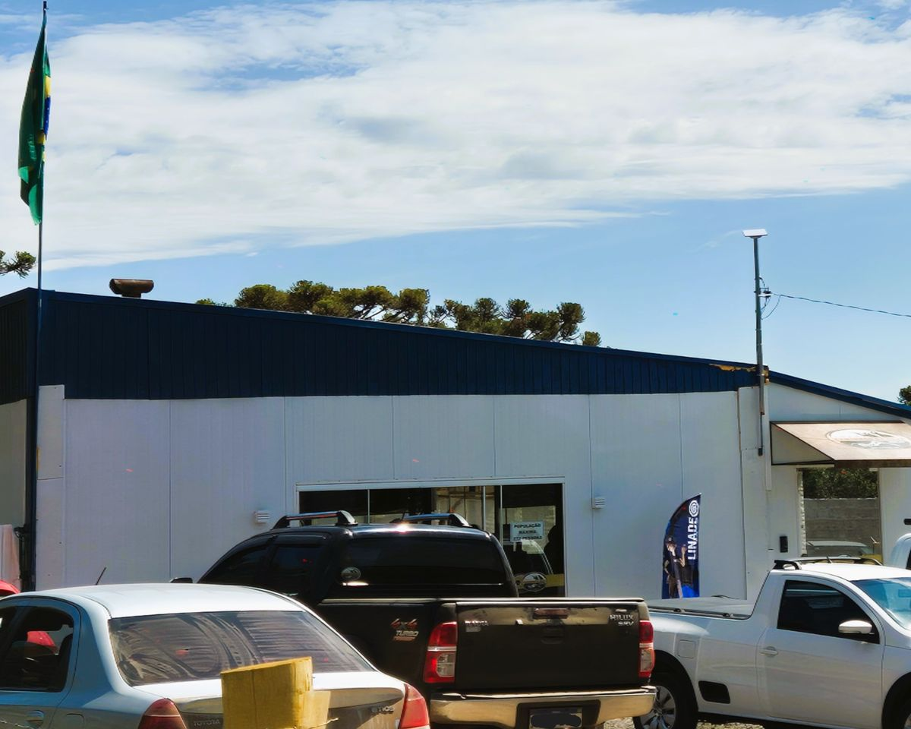
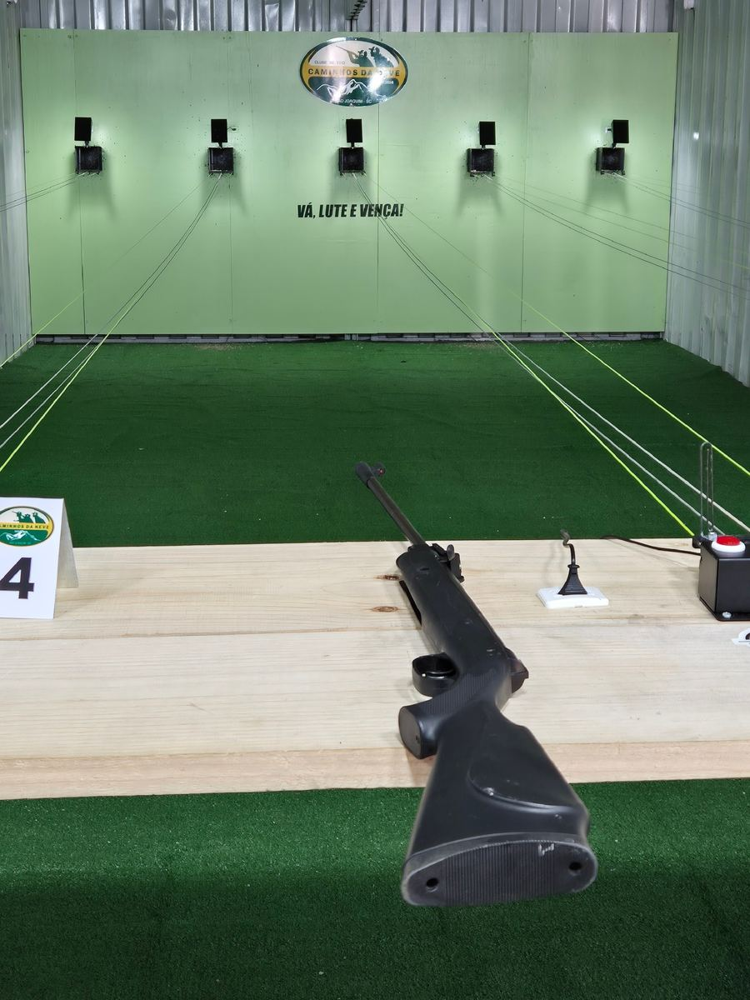
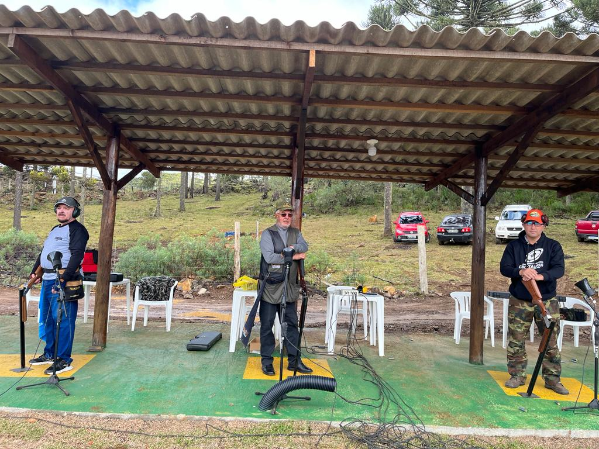

Caminhos
da Neve
Clube de tiro
Precisão, esporte e competição a 1.360 metros de altitude, na serra catarinense. Pistas outdoor, trap americano, pista indoor de ar e pista de precisão de 100 m, com homologação do Exército e da CBTE.
Próximas competições
Campeonatos oficiais e etapas do ranking regional. Confira data, local e modalidade de cada prova e acompanhe a pontuação dos atiradores do Sul.
Calendário completo de 2026-
Campeonato Catarinense Caminhos da Neve
Etapa estadual com provas de tiro ao prato e fuzil de precisão, disputadas nos estandes do clube em São Joaquim.
Inscrições abertas
-
Copa Serra Catarinense de Tiro ao Prato
Etapa pontuável para o ranking regional nas modalidades Trap 50 e Trap Double, com premiação especial.
Inscrições abertas
-
Torneio Aberto de Carabina e Pistola
Disputas em estandes de precisão de 25 m e 50 m para calibres permitidos e restritos esportivos.
Fase de qualificação
-
Grande Prêmio Campeiros da Neve
O torneio principal do clube, com confraternização tradicional serrana e disputas de alta precisão.
Grande prêmio anual


Quero ser atleta (CAC)
Para se tornar um Atleta do Tiro Desportivo (CAC) e obter o CR, o interessado deve seguir alguns passos e preencher alguns requisitos. Mas fique tranquilo: cuidamos de toda a burocracia.
Como obter o CRQuero me filiar ao clube
Para se tornar sócio, você deve concluir o curso de tiro. Então estará apto a se associar, participar dos eventos do clube e frequentar os estandes.
Como se filiarNossa estrutura

O Clube Recreativo Caça e Tiro Caminhos da Neve conta com completas instalações para a prática de tiro, com pistas outdoor para a prática de tiro esportivo ou tático e uma pista indoor para o tiro de ar. Além disso, possuímos uma área para a prática de tiro ao prato (trap americano) e uma pista de 100 m para o tiro de precisão.
Venha nos visitar e experimentar este esporte que é inclusivo, familiar, divertido e de muitos amigos.
- Pistas outdoor
- Tiro esportivo e tático
- Pista de precisão
- 100 m
- Em atividade desde
- 2016

Pista de tiro de ar
Nosso clube conta com uma pista de ar indoor de 10 m, composta de 5 baias e transportador de alvo automático. Uma excelente oportunidade para incentivar, reconhecer e formar novos talentos e atletas olímpicos.

Tiro ao prato
Aqui no Clube Caminhos da Neve, também contamos com a pista de tiro ao prato (trap americano).
Últimas notícias
Atualizações normativas, resultados de campeonatos e comunicados da diretoria.
Ver todas as notícias
Campeonato reúne mais de 120 atletas em São Joaquim
Atletas de diversos estados participaram da etapa classificatória, com índices recordes de aproveitamento nas baterias de precisão.

Confira o calendário oficial e as normas para as competições de 2026
Datas e estandes das provas de trap americano, fuzil e carabina já estão disponíveis para os atletas filiados.

Resultados da 1ª Etapa Serrana de Trap e Precisão
Tabela completa de pontuações, desempates e pódios da etapa disputada no último fim de semana em nossas dependências.
Momentos do Caminhos da Neve
Estandes e sede cercados pela mata de araucárias de São Joaquim.
Galeria completa no Flickr e nas redes


Fale conosco
Quer agendar uma visita ou tirar dúvidas sobre filiação, documentação de atirador desportivo (CR), treinos ou inscrições em provas? Fale com a nossa secretaria.
-
Telefone fixo(49) 3233-1820
-
WhatsApp da secretaria(49) 99824-2016
-
Sede de campoRodovia SC-114, km 28, Região Serrana
São Joaquim, SC, CEP 88600-000
Como chegar
Acesso todo pavimentado pela SC-114, a 15 minutos do centro de São Joaquim. Visitas com agendamento prévio; uso de EPI obrigatório em todas as baias de tiro.
28°17′38″ S, 49°55′54″ W